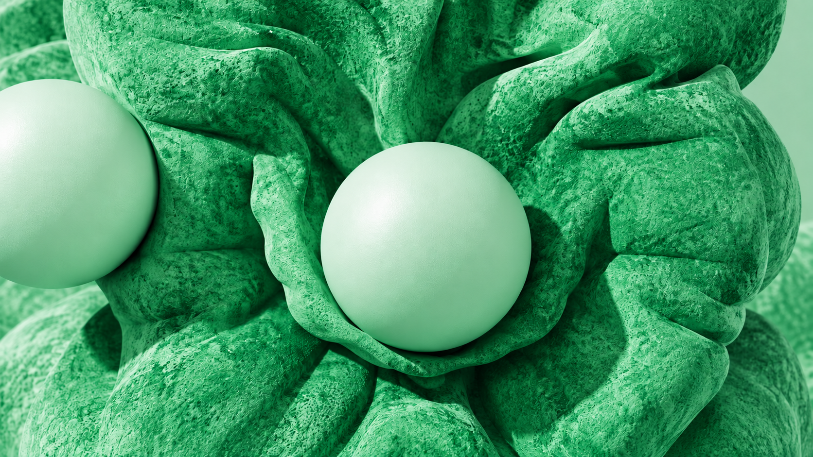

SEODigital MarketingContent StrategyVisual MarketingData AnalyticsEmail Marketing
creativity · innovation · progress
01Marketing analytics: Illuminating your path to digital triumph by decoding data intricacies.

Discover endless possibilities with Spark’s expressive ideas.
Explore NowThe same layout grammar, now anchored to the original 706 green. Pale surfaces make room for saturated actions and deep forest contrast.
706 green color fork of the Spark screenshot study. Layout remains comparable; artwork, colors and interactions are authored interpretations.